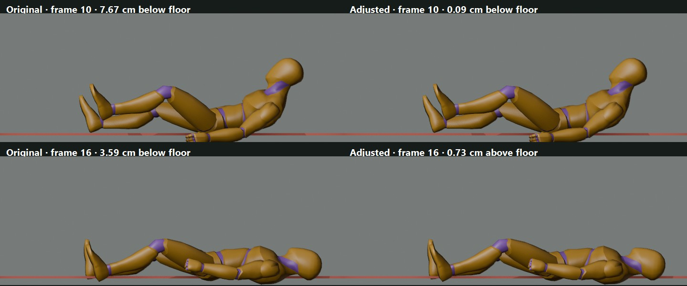

Hit Knockback: retarget floor-contact review
The candidate adds a smoothed vertical root curve to Quaternius UAL2 Hit_Knockback. This board compares the existing game-loader QA results with the candidate clip injected at runtime into the same 27 humanoid profiles. No game source files or QA outputs were changed.
What changed across the profiles
27 / 27profiles had less floor penetration
34.3 → 27.8 cmworst penetration; still severe
12.3 → 7.4 cmmedian penetration
14 / 27still penetrate at least 5 cm
64.4 → 84.8 cm/smaximum planted-foot slip increased
Reference-rig visual check

These are Blender renders of the UAL2 reference mannequin. They show why the single shared curve looked promising on its source rig; the table below exposes the retargeting problem.
Game-loader measurements by character
| Profile | Floor penetration | Change | Planted-foot slip | Both feet airborne |
|---|
Recommendation: do not replace the shared gameplay alias with this clip as-is. The curve helps every profile but leaves 14 profiles with visibly deep penetration, and the largest slip metric worsens. Any follow-up needs a retarget-aware correction or a better authored clip, followed by live guard-break and heavy-hit review.